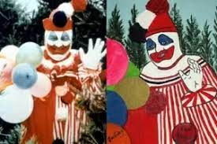

Casos Da DeepWeb
O assassino em série que fez com que os palhaços nos aterrorizassem

Historia Resumida
Há casos em que a realidade supera a ficção. A história de John Wayne Gacy é um deles. Vizinho exemplar, empresário de sucesso e membro do
comitê local do Partido Democrata em Chicago, Gacy decidiu aumentar sua popularidade criando seu próprio personagem: o palhaço Pogo. Era um disfarce. Por
baixo dele se escondia um assassino impiedoso. Suas vítimas sempre eram adolescentes a quem convencia a ir à sua casa, onde os estuprava e assassinava.
Um tribunal o condenou à pena capital e ele foi executado em 1994, depois de passar 14
anos no corredor da morte, mas nunca demonstrou arrependimento.
Historia Completa Dele
PARA VER TODOS OS ARQUIVOS
Acesse o GitHub para ver meus links
Documentario Sobre O Palhaço
Documentario completo